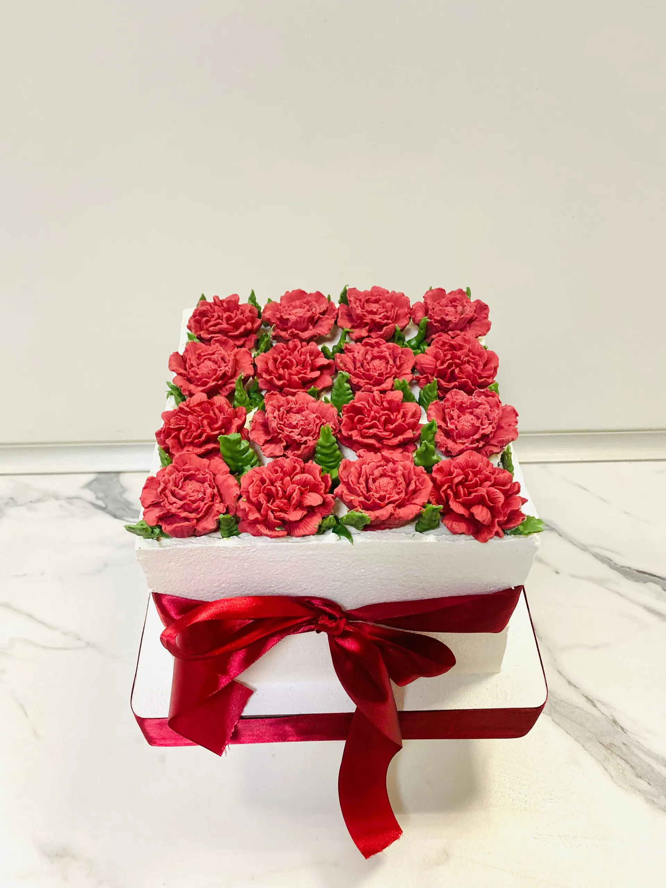
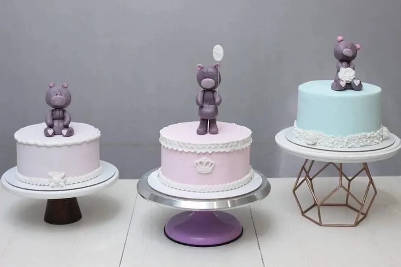
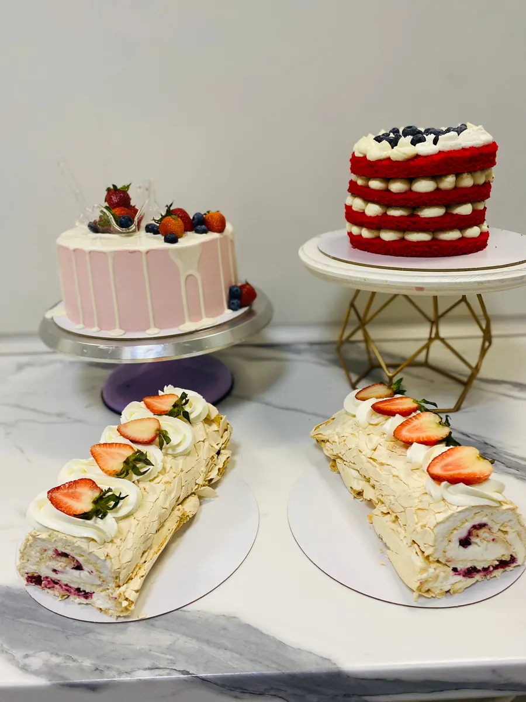
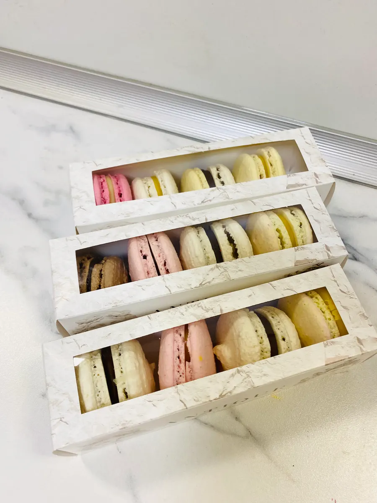

Кондитерская на Неделина, 15А
Натуральные торты и десерты на заказ в Липецке
Торты, пирожные и куличи из натуральных ягод и продуктов, без химии. Заказывайте к празднику или берите готовые замороженные торты.

- 4,7 на Яндекс.Картах, 36 оценок
- Натуральные ягоды, без химии
- Доставка и срочные заказы
Что у нас можно купить
Цену торта называем при заказе: она зависит от размера и украшений.
Торты и десерты
- Торт на заказна день рождения и другой праздникуточнить
- Замороженные тортыготовые, чтобы взять домойуточнить
- Пирожныеуточнить
- Меренговый рулетуточнить
- Макаронсуточнить
К празднику и в подарок
- Куличик Пасхеуточнить
- Наборы печенья и шоколадауточнить
- Доставкадля особого случаяуточнить
Как заказать торт
- 01
Повод и дата
Напишите в Telegram или позвоните: скажите, к какому дню нужен торт.
- 02
Вкус и оформление
Расскажите, какие ягоды и начинки хотите и как украсить торт.
- 03
Забрать или с доставкой
Торт можно забрать на улице Неделина, 15А или заказать с доставкой.



Что пишут клиенты
Без химии
«Только здесь готовят с натуральными ягодами без какой либо химии», пишет Ольга Смольянинова.
Срочные заказы
«И на срочные заказы, всегда отзываются!», пишет Елена М.
Есть заморозка
О замороженных тортах Наталья Ф. пишет: «удобно и очень вкусно».
Торты и куличи к праздникам
Наталья Ф. заказывает у нас торты на праздники и куличи.
Отзывы с Яндекс.Карт
«Заказываем на день рождения только тут торты, потому что только здесь готовят с натуральными ягодами без какой либо химии. Всегда десерт на нашем столе на высшем уровне!!!»
Ольга Смольянинова · 24 мая
«Всегда свежие, натуральные тортики и пироженки. Много лет заказываю именно у них. Ни разу не подвели!) А еще радует, что сейчас можно приобрести замороженный тортик, по привлекательной цене. И на срочные заказы, всегда отзываются! Спасибо, что вы есть! Продолжайте дарить радость людям.»
Елена М. · 1 августа 2024
«Замечательная кондитерская, заказываем тортики, пироженые только у Душкиной! Свежее, натуральное, еще и доставка есть, если надо оформить для особого случая - очень быстро и красиво делают, исполняют любые пожелания. Рекомендую от души, самое лучшее в городе - здесь!»
Юлия А. · 5 декабря 2024
Отзывы с карточки на Яндекс.Картах, без правок.
Контакты
- Адрес
- улица М.И. Неделина, 15А, цокольный этаж, Липецк
- Часы
- ежедневно, с 10:00 до 18:00
- Телефон
- +7 (920) 240-00-32